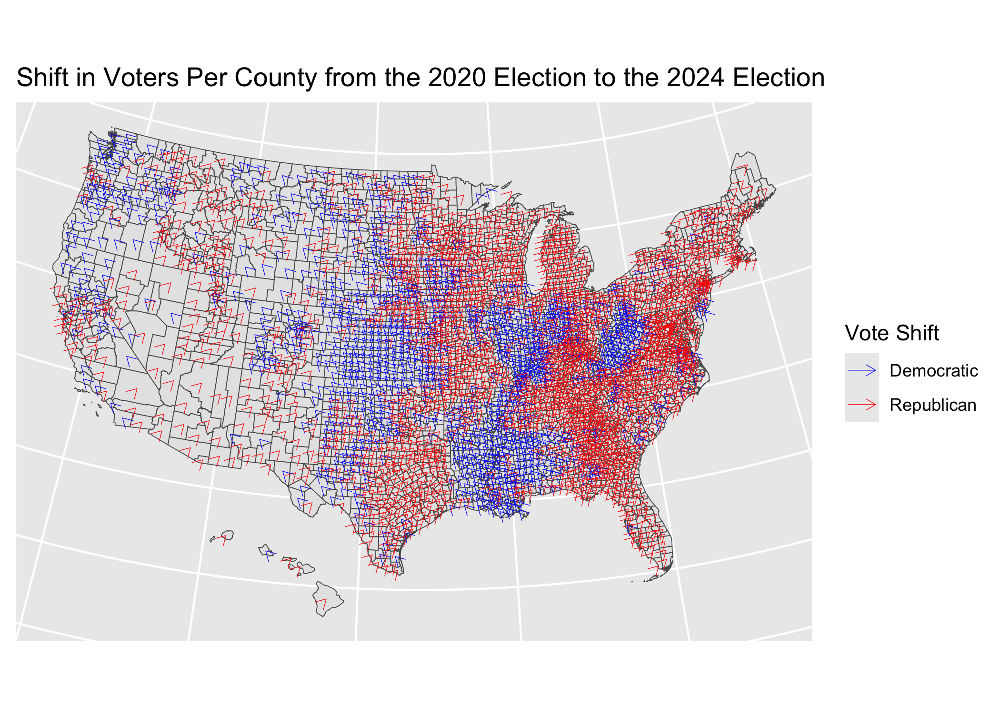

Code
library(janitor)
library(purrr)
library(dplyr)
library(tidyverse)
library(rvest)
library(httr2)
library(sf)
library(stringr)
library(ggplot2)
library(gt)
library(tigris)get_shape_data <- function(refresh = FALSE) {
if (refresh == TRUE) {
if (!file.exists("data/mp04/cb_2023_us_all_20m.zip")) {
dir.create("data/mp04", showWarnings = FALSE, recursive = TRUE)
shape_data <- "https://www2.census.gov/geo/tiger/GENZ2023/shp/cb_2023_us_all_500k.zip"
download.file(shape_data, "data/mp04/cb_2023_us_all_500k.zip/cb_2023_us_county_500k/cb_2023_us_county_500k.shp")
unzip("data/mp04/cb_2023_us_all_500k.zip", exdir = "data/mp04")
unzip("data/mp04/cb_2023_us_all_500k/cb_2023_us_county_500k.zip",exdir="data/mp04/cb_2023_us_all_500k/")
}
}
counties <- read_sf("data/mp04/cb_2023_us_all_500k/cb_2023_us_county_500k/cb_2023_us_county_500k.shp")
}
counties <- get_shape_data()
geo_shifted <- shift_geometry(
counties,
position = "below", # other option: "outside"
preserve_area = FALSE
)|>
mutate(center = st_centroid(geometry))Below is the code used to retreive the State and County election results from wikipedia.
get_wiki_data_by_state <- function(state, year, refresh = FALSE) {
if (!state == "Washington") {
clean_state <- state |>
str_replace_all(" ", "_")
} else {
clean_state <- "Washington_(state)"
}
cache_file_path <- paste("data/mp04/States/", clean_state, "_", year, ".html", sep = "")
if (refresh == TRUE) {
url <- paste("https://en.wikipedia.org/wiki/", year, "_United_States_presidential_election_in_", clean_state, sep = "")
download.file(url, cache_file_path)
}
if (!clean_state %in% c("Ohio", "Pennsylvania", "Utah")) {
df <- read_html(cache_file_path) |>
html_elements("table") |>
html_table(header = TRUE) |>
Filter(
\(x) (("Parish" %in% str_sub(colnames(x)) |
("County" %in% str_sub(colnames(x), 1, 6))) &
(!"Firstalignment" %in% (colnames(x))) &
(!"City" %in% colnames(x)) &
(!"County.elections" %in% (colnames(x))) &
(!"Jo JorgensenLibertarian" %in% colnames(x))),
x = _
) |>
data.frame() |>
mutate(state = clean_state) |>
tail(-1)
} else {
df <- read_html(cache_file_path) |>
html_elements("table") |>
html_table(header = TRUE) |>
Filter(
\(x) (
("County" %in% str_sub(colnames(x), 1, 6)) &
(("Jo JorgensenLibertarian" %in% colnames(x)) |
("Various candidatesOther parties" %in% colnames(x)))),
x = _
) |>
data.frame() |>
mutate(state = clean_state) |>
tail(-1)
}
if ("County.elections" %in% colnames(df)) {
df <- subset(df, select = -c(`County.elections`))
}
if ("County.executive.elections" %in% colnames(df)) {
df <- subset(df, select = -c(`County.executive.elections`))
}
total_cleaner_index <- ncol(df) - 1
if ("Joe.BidenDFL" %in% colnames(df)) {
df$`Joe.BidenDemocratic` <- df$`Joe.BidenDFL`
tmp <- ncol(df) - 2
}
if ("Joe.BidenDemocratic.NPL" %in% colnames(df)) {
df$`Joe.BidenDemocratic` <- df$`Joe.BidenDemocratic.NPL`
tmp <- ncol(df) - 2
}
if ("Kamala.HarrisDFL" %in% colnames(df)) {
df$`Kamala.HarrisDemocratic` <- df$`Kamala.HarrisDFL`
tmp <- ncol(df) - 2
}
if ("Kamala.HarrisDemocratic.NPL" %in% colnames(df)) {
df$`Kamala.HarrisDemocratic` <- df$`Kamala.HarrisDemocratic.NPL`
tmp <- ncol(df) - 2
}
colnames(df)[1] <- "County"
colnames(df)[total_cleaner_index] <- "Total"
if (year == "2020") {
df <- df |>
select(c(
County,
Donald.TrumpRepublican,
Joe.BidenDemocratic,
Margin,
Total,
state
))
} else {
df <- df |>
select(c(
County,
Donald.TrumpRepublican,
Kamala.HarrisDemocratic,
Margin,
Total,
state
))
}
write.csv(df, paste("data/mp04/States/", clean_state, "_", year, "_dataframe.csv", sep = ""))
return(df)
}We have to filter out Alaska from the data as the Wikipedia data is not present at the county-equivalent level. Connecticut is not properly in the Census data format at the county level and as such will be excluded from this analysis.
Now we will read the data into data frames.
files_2024 <- list.files(path = "data/mp04/States/", pattern = "2024_dataframe.csv", full.names = TRUE)
df_2024 <- read_csv(files_2024) |>
bind_rows() |>
filter(!`County`=='Totals') |>
filter(!`County`=='Total') |>
select(-c(`...1`)) |>
mutate(State = case_when(state=='Washington_(state)' ~ 'Washington',
TRUE ~ str_replace_all(state,"_", " "))) |>
select(-c('state','Margin'))
names(df_2024)[2] <- 'Donald.TrumpRepublican2024'
names(df_2024)[3] <- 'Kamala.HarrisDemocratic2024'
names(df_2024)[4] <- 'Total2024'
files_2020 <- list.files(path = "data/mp04/States/", pattern = "2020_dataframe.csv", full.names = TRUE)
df_2020 <- read_csv(files_2020) |>
bind_rows() |>
filter(!`County`=='Totals') |>
filter(!`County`=='Total') |>
select(-c(`...1`)) |>
mutate(State = case_when(state=='Washington_(state)' ~ 'Washington',
TRUE ~ str_replace_all(state,"_", " "))) |>
select(-c('state','Margin'))
names(df_2020)[2] <- 'Donald.TrumpRepublican2020'
names(df_2020)[3] <- 'Joe.BidenDemocratic2020'
names(df_2020)[4] <- 'Total2020'
tmp <- left_join(df_2020,df_2024, by=join_by(State==State,County==County))
results <- left_join(tmp,geo_shifted, by=join_by(State==STATE_NAME,County==NAME))| State | County | Votes for Donald Trump |
|---|---|---|
| California | Los Angeles | 1,145,530 |
Los Angeles County had the largest absolute number of votes for Donald Trump in 2024 at 1,145,530 votes.
| State | County | Percentage of Votes for Joe Biden |
|---|---|---|
| Hawaii | Kalawao | 95.83% |
Kalawao County in Hawaii has the largest total percentage vote for Joe Biden in 2024 at 95.83% of the vote.
| State | County | Increase in Trump Votes |
|---|---|---|
| Florida | Miami-Dade | 72,757 |
Miami-Dade county had the largest absolute increase in Trump votes at 72,757 more Republican votes in 2024 than in 2020.
results |>
group_by(State) |>
summarise(kamala_votes = sum(Kamala.HarrisDemocratic2024),
joe_votes = sum(Joe.BidenDemocratic2020)) |>
mutate(dem_shift= kamala_votes - joe_votes) |>
select(State,dem_shift) |>
slice_max(dem_shift, n=1) |>
rename(`Democratic Shift`=dem_shift) |>
gt() |>
fmt_number(`Democratic Shift`,decimal=0)| State | Democratic Shift |
|---|---|
| Georgia | 74,384 |
Georgia had the largest gain in Democratic voters, with a total vote gain at 74,384 votes.
| State | County | Area (Square Meters) |
|---|---|---|
| California | San Bernardino | 51,976,311,343 |
San Bernardino county has the largest area at 51.98 Billion square meters.
results |>
select(State,County,Total2020,ALAND) |>
mutate(Density2020=Total2020/ALAND) |>
slice_max(Density2020,n=1) |>
rename(`Total Votes in 2020`=Total2020,
`Area (Square Meters)`=ALAND,
`Number of Voters per Square Meter`=Density2020)|>
gt() |>
fmt_number(c(`Total Votes in 2020`,
`Area (Square Meters)`), decimal=0)| State | County | Total Votes in 2020 | Area (Square Meters) | Number of Voters per Square Meter |
|---|---|---|---|---|
| Virginia | Fairfax | 600,823 | 16,163,924 | 0.03717062 |
Fairfax county in Virginia had the largest voter density at 0.037 voters per square meter.
| State | County | Voter Count 2024 | Voter Count 2020 | Change |
|---|---|---|---|---|
| Nevada | Clark | 1,031,223 | 972,510 | 58713 |
Clark county in Nevada had the largest increase in voter turn out with 58,713 more individual votes going to the polls in 2024 compared to 2020.
res <- results |>
mutate(shift=(100*Donald.TrumpRepublican2024/Total2024)-(100*Donald.TrumpRepublican2020/Total2024),
arrow_direction = ifelse(shift >= 0, "Republican", "Democratic"))
arrow_data <- st_coordinates(results$center) |>
as.data.frame() |>
cbind(res) |>
rename( X_point =X, Y_point=Y) |>
mutate(dx = case_when(
arrow_direction == "Republican" ~ 0.1,
arrow_direction == "Democratic" ~ -0.1,
TRUE ~ 0
),
dy=0.1) |>
filter(!is.na(arrow_direction))
ggplot() +
geom_sf(data=arrow_data$geometry) +
geom_segment(data=arrow_data,
aes(x=X_point,y=Y_point,xend=X_point+dx,yend=Y_point+dy,color=arrow_direction),
arrow = arrow(length = unit(0.2, "cm")),
size = 0.15) +
scale_color_manual(
values = c("Republican" = "red", "Democratic" = "blue"),
name='Vote Shift'
) +
labs(title="Shift in Voters Per County from the 2020 Election to the 2024 Election",x=NULL,y=NULL) +
theme(axis.ticks.x=element_blank(),
axis.ticks.y=element_blank(),
axis.text.x=element_blank(),
axis.text.y=element_blank()
)